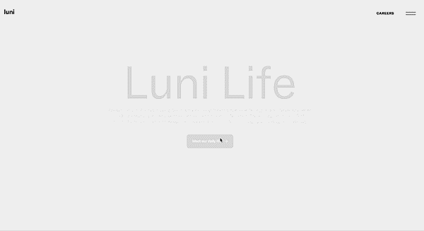
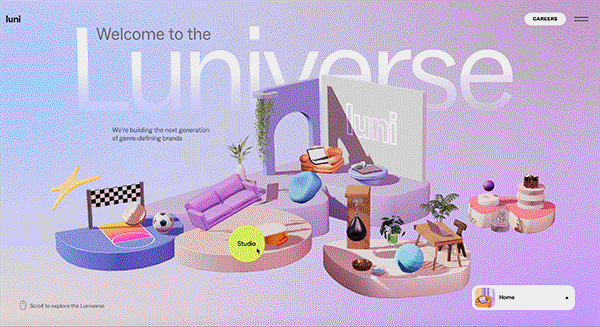
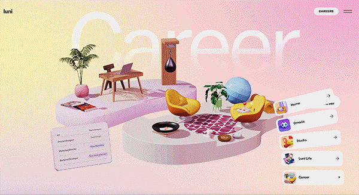
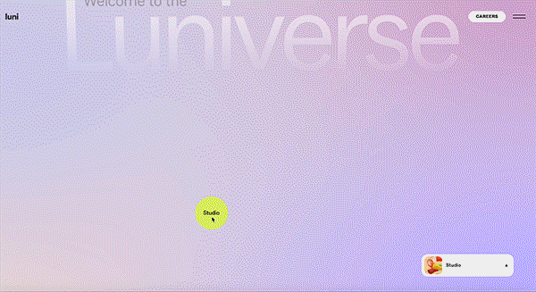
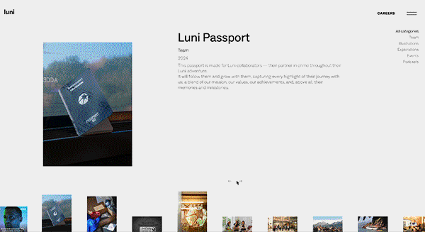
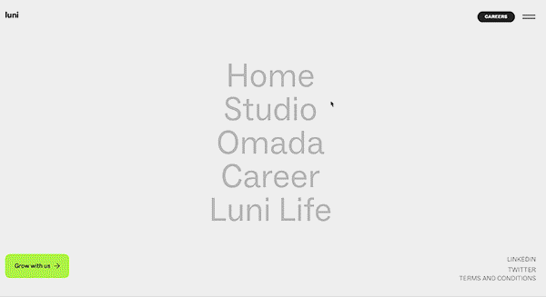
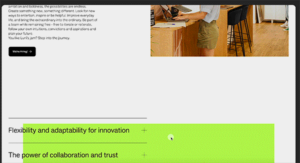
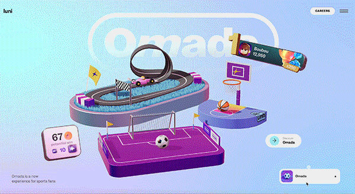
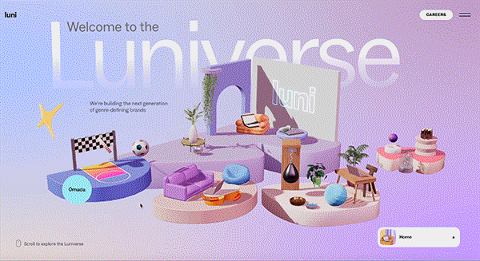

What was the first thing you paid attention to when interacting with the experience?
One of the most interesting aspects is how even the mouse movement effects how the 3d models moved.
It was the first thing that caught my eye after the website loaded, it feels so interactive and I
haven’t even begun clicking things yet.
Fig 1. How the models move with your mouse movement
Spend two minutes with the experience and create a list of each of your discrete actions.
I hovered around the website with my mouse.
I then clicked on one of the models and proceeded to click on the discover button and scrolled through the text
I then went out of that and clicked a small button in the button right corner that let me switch between the sections
I did this a few times while engaging with each small model/area and seeing what the artistic design was
I also used a tab at the top to also switch between the sections if I ever got stuck trying to click out of something

Fig 2. Looking through aspects of the website during the 2 minutes
What part of the experience did you spend the most time engaging with?.
I spent most of the time engaging with the visuals, while I was curious about what the visual represented,
I first wanted to see all the transitions and aspects of the website I could understand as someone who is
interested in animation and design, and that was the aspect that really drew me in.
Fig 3. Showing how I engage with the models
What was the most common action in your two minute interaction with the experience?
I was very interested in seeing all the models that have been made and how they were animated, so I spent
a lot of time clicking between each section of the website watching how they made the transitions work when
moving between each area and seeing how the website reacted to my mouse movements.

Fig 4. Showing the animations playing out while hovering
What is your impression of the intended primary goal of the interactive experience?
The impression is from the way its set up and how polished the models and animation are, the website
is intending to show the company the “luniverse” and how confident they are in the company. It shows
what they do and also talks about the company as an employee, making the primary goal to get more
reach in opportunities whether it be through new employees or new work.

Fig 5. Interacting with the primary goal and moving into the reading
How does the interactive experience communicate this primary goal?
It does this by enticing you initially with the smooth and interactive design and then slowly
feeding you more and more information the more you interact and click on the website. This way
you’ve already interacted with the website enough to gain your curiosity about what the website
represents that by the time you get to the text you’re already genuinely curious instead of
throwing it at you at the start.
Fig 6. Shows the pathway towards the information
What is your impression of how the experience should be interacted with over time? (For how long and how many different times)
It should be interactive with once and for about 10-20 minutes, the information itself relies heavily on finding aspects
of the website that you might specifically be looking for, whether it be figuring out what the company does, seeing if
they're reliable or looking for employment opportunities, while a good scroll through the entire website is useful.
Most likely you'll be focused on a few set of specific tabs or sections, which would lead to a more simple and centralised
view, this could take about 10-20 minutes and only really needs one viewing.
Fig 7. Shows how it seems like it should be interacted with
How does the interactive experience communicate how it should be interacted with over time?
The way it shows how it should be interacted is through small popups that lead you through the process, every time
you click something, something else pops up and it slowly maneuvers you through the journey, slowly feeding you the
information and getting you invested.

Fig 8. Shows how I interacted with through all the time
What other media forms (digital or otherwise) does the experience reference?
Aside from the 3d modelling that is very apparent in the entire website the more you go through the experience the
more you'll see photography, this is shown more near the end of the paths the website takes you down, to match the
text where you receive the most information on what the website is about

Fig 9. Shows the photography aspects of the website
What does this reference/s communicate to you about how you should act when engaging with your research experience?
It gives you more of an insight on what the environment the website is trying to convey, the feelings and the aesthetic
that the digital aspects provide is the same with the photography aspect, they both have similar lighting and a very
similar tone. It makes you act curious and invites you to click and look around, the vibe is very welcoming and polished.

Fig 10. shows some of the photos and the animated models
What does this reference/s communicate to you about how you should feel when engaging with your research experience?
It shows you that you should feel positive about the experience, everything its very lit up, very high resolution and
very bright in colour choice, it’s supposed to make you feel calm and curious and it's supposed to feel inviting

Fig 11. Showing the more positive aesthetics
What is the most frustrating part of the interaction to you and what makes that part frustrating?
When I was trying to click some of the buttons there would be moments where it wouldn't respond to my clicks which
was a bit frustrating

Fig 12. Showing the clicks not fully working
What is the most satisfying part of the interaction to you and what makes that part satisfying?
Just hovering over stuff and seeing how everything reacts was really satisfying overall

Fig 13. Showing the models I would click on consistently